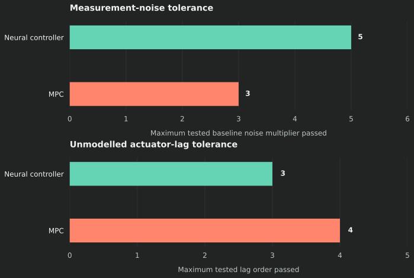

BEng dissertation · Grade: 74% · 2025–2026
Neural networks & model predictive control
Building the training and experiment software to investigate when learned controllers and MPC handle uncertainty well.
The research question
How does the choice of controller affect performance when the real system differs from the model used to design it? I compared neural-network policies with model predictive control across nine first-order systems and a simulated cart-pole, including measurement noise and unmodelled dynamics.
I wrote neural-network training code in Python and NumPy, including backpropagation through simulated dynamics and Adam optimisation.
Building software to answer the question
When my initial network underperformed, I needed a more flexible way to investigate different architectures. I refactored the experiment software around a shared configuration manifest for controller variants, network shapes and test settings.
- 01Define experiment configurations
- 02Train or reuse saved weights
- 03Run comparable evaluations
- 04Inspect results & refine experiments
The pipeline supported concurrent training and evaluation and reuse of saved weights. It let me spend more effort comparing behaviour across scenarios, instead of repeatedly adapting scripts to one network architecture.
What the comparisons showed
The stronger approach depended on the uncertainty being tested. In the cart-pole study, a richer-input neural controller tolerated more measurement noise, while MPC handled a higher tested order of unmodelled actuator lag.

| Test | Rich-input (16,16) neural controller | MPC |
|---|---|---|
| Measurement noise: maximum tested baseline multiplier passed | 5× | 3× |
| Unmodelled actuator dynamics: maximum tested lag order passed | 3 | 4 |
These were simulation results for local upright stabilisation, not physical deployment or swing-up. The reported cart-pole sweep used one training seed per controller and a finite test grid. The results do not establish a universally superior method.
What I took from it
A configuration that looks good in one test can be fragile in another. The most useful outcome was learning to connect a modelling question to an experiment design, then build the tools needed to compare alternatives consistently.
The training implementation used direct gradient-based optimisation through simulated rollouts in NumPy.